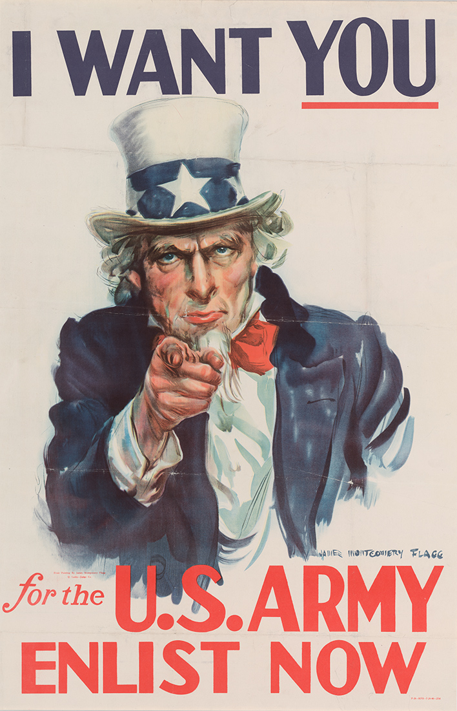
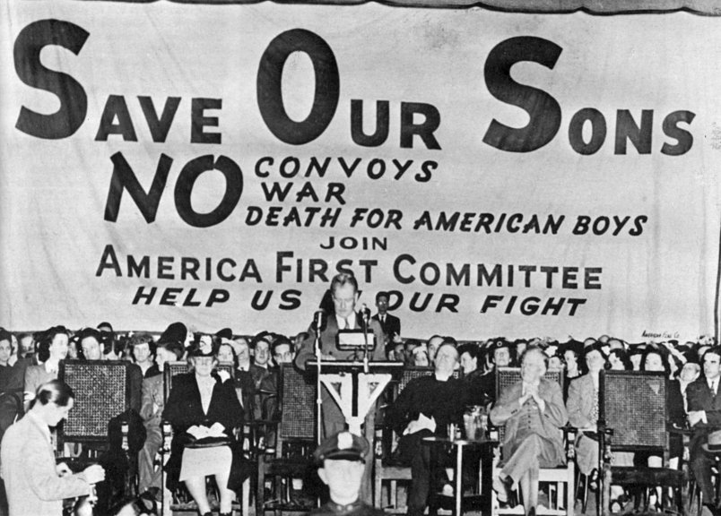

What resulted from US involvement in WWII?
- The US defeated Japan and prevented Japanese expansion into East Asia
- The US supported the allied forces with supplies
- The US implemented Japanese Internment Camps with FDR's Executive Order 9066
- The US was able to end the Great Depression due to war production

|
Alternative Outcome?
- Japan would have gained power in East Asia
- The war would have prolonged due to a lack of strength against Japan and Germany
- The Soviets could have lost at Stalingrad due to additional fighting on the pacific front
- The Soviet army would have died from starvation and lack of basic resources
- Possible stalemate in Eastern Europe
- No Japanese Internment camps and compensation in later years in the US
- The Great Depression would have prolonged due to a lack of industry

|